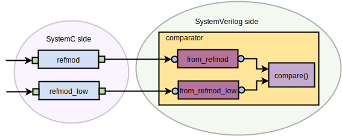

Although UVM provides a high level of abstraction for building reference models, SystemC has a legacy in high level models for design and validation. In order to allow the reuse of reference models written in SystemC in UVM testbenches, UVMC provides TLM1 and TLM2 connectivity between SystemC and SystemVerilog UVM models and components (see Figure 1).
Figure 1 - UVMC: SystemC and SystemVerilog sides{kind=link}
For TLM communication, verification components must agree with the data they are exchanging. Parameterizing these components with the transactions enable them to make UVMC connections [1].
A simple example
To illustrate the usage of UVM Connect, the testbench of the Figure 2 will be used as an example. Different from the simple adder testbench, this testbench does not have monitor nor driver, once what is being checked is the operation of the module refmod_low (written in SystemC) in function of the operation of the refmod (another module written in SystemC).
Figure 2 - A simple testbench with two refmods{kind=link}
The operation of the both refmods are quite simple: they just get the transactions (strings with messages) coming from the uvm_tlm_analysis_fifo's from_refmod and from_refmod_low and put those transactions into uvm_tlm_fifo's to_refmod and to_refmod_low, respectivelly.
The sequence reads the files of the tree of the Figure 3 and the sequencer sends the transaction to the the path_tr, in which trasmits it to the uvm_tlm_analysis_fifo's from_refmod and from_refmod_low using an analysis_port.
Figure 3 - Tree containing transactions for the sequence{kind=link}
The codes of the testbench and its refmods can be seen below.
class packet_in extends uvm_sequence_item; string message; `uvm_object_utils_begin(packet_in) `uvm_field_string(message, UVM_DEFAULT|UVM_HEX) `uvm_object_utils_end function new(string name="packet_in"); super.new(name); endfunction: new endclass: packet_in
class packet_out extends uvm_sequence_item; string message; `uvm_object_utils_begin(packet_out) `uvm_field_string(message, UVM_DEFAULT|UVM_HEX) `uvm_object_utils_end function new(string name="packet_in"); super.new(name); endfunction: new endclass: packet_out
import "DPI-C" context function string read_message(string msg); class sequence_in extends uvm_sequence #(packet_in); `uvm_object_utils(sequence_in) function new(string name="sequence_in"); super.new(name); endfunction: new int data_file, scan_file; string filename; function void open_file(); data_file = $fopen("myfile.txt", "r"); if(data_file == 0)begin $display("file could not be open!!!"); end endfunction: open_file task body(); packet_in tr; open_file(); while(1)begin scan_file = $fscanf(data_file, "%s", filename); tr = packet_in::type_id::create("tr"); start_item(tr); tr.message = read_message(filename); finish_item(tr); if($feof(data_file)) break; end $finish(); endtask: body endclass: sequence_in
#include <stdio.h> #include <iostream> #include <fstream> #include <string> using namespace std; extern "C" const char* read_message(const char* message){ string msg; ifstream myfile(message); if(myfile.is_open()){ getline(myfile, msg); return msg.c_str(); } else cout << "unable to open file"; }
class sequencer extends uvm_sequencer #(packet_in); `uvm_component_utils(sequencer) function new (string name = "sequencer", uvm_component parent = null); super.new(name, parent); endfunction endclass: sequencer
class path_tr extends uvm_driver #(packet_in); packet_in tr; `uvm_component_utils(path_tr) uvm_analysis_port #(packet_in) item_collected_port; function new(string name, uvm_component parent); super.new(name, parent); item_collected_port = new ("item_collected_port", this); endfunction virtual task run_phase(uvm_phase phase); forever begin seq_item_port.get_next_item(tr); begin_tr(tr, "path_tr"); item_collected_port.write(tr); end_tr(tr); seq_item_port.item_done(); end endtask endclass: path_tr
#include "systemc.h" #include "tlm.h" #include <string> using namespace std; using namespace tlm; struct tr { string message; }; #include "uvmc.h" using namespace uvmc; UVMC_UTILS_1(tr, message) SC_MODULE(refmod) { sc_port<tlm_get_peek_if<tr> > in; sc_port<tlm_put_if<tr> > out; void p() { tr tr; while(1){ tr = in->get(); cout <<"refmod: " <<tr.message <<"\n"; out->put(tr); } } SC_CTOR(refmod): in("in"), out("out") { SC_THREAD(p); } };
SC_MODULE(refmod_low){
sc_port<tlm_get_peek_if<tr> > in;
sc_port<tlm_put_if<tr> > out;
void p() {
tr tr;
while(1){
tr = in->get();
cout <<"refmod_low: " <<tr.message <<"\n";
out->put(tr);
}
}
SC_CTOR(refmod_low): in("in"), out("out") { SC_THREAD(p); }
};
#include "refmod.cpp" #include "refmod_low.cpp" int sc_main(int argc, char* argv[]) { refmod refmod_i("refmod_i"); refmod_low refmod_low_i("refmod_low_i"); uvmc_connect(refmod_i.in, "refmod_i.in"); uvmc_connect(refmod_low_i.in, "refmod_low_i.in"); uvmc_connect(refmod_i.out, "refmod_i.out"); uvmc_connect(refmod_low_i.out, "refmod_low_i.out"); sc_start(); return(0); }
class comparator #(type T = packet_in) extends uvm_scoreboard; typedef comparator #(T) this_type; `uvm_component_utils(this_type) uvm_tlm_fifo #(T) from_refmod; uvm_tlm_fifo#(T) from_refmod_low; T tr1, tr2; int match, mismatch; function new(string name, uvm_component parent); super.new(name, parent); from_refmod = new("from_refmod", null, 1); from_refmod_low = new("from_refmod_low", null, 1); tr1 = new("tr1"); tr2 = new("tr2"); endfunction function void connect_phase(uvm_phase phase); uvmc_tlm1 #(T)::connect(from_refmod.put_export, "refmod_i.out"); uvmc_tlm1#(T)::connect(from_refmod_low.put_export, "refmod_low_i.out"); endfunction: connect_phase task run_phase(uvm_phase phase); forever begin from_refmod.get(tr1); from_refmod_low.get(tr2); compare(); end endtask: run_phase virtual function void compare(); if(tr1.message == tr2.message) begin $display("Comparator MATCH"); match++; end else begin $display("Comparator MISMATCH"); mismatch++; end endfunction: compare endclass: comparator
`include "comparator.sv" class env extends uvm_env; sequencer sqr; path_tr path; comparator #(packet_out) comp; uvm_tlm_analysis_fifo #(packet_in) to_refmod; uvm_tlm_analysis_fifo #(packet_in) to_refmod_low; `uvm_component_utils(env) function new(string name, uvm_component parent = null); super.new(name, parent); to_refmod = new("to_refmod", this); to_refmod_low = new("to_refmod_low", this); endfunction virtual function void build_phase(uvm_phase phase); super.build_phase(phase); sqr = sequencer::type_id::create("sqr", this); path = path_tr::type_id::create("path", this); comp = comparator #(packet_out)::type_id::create("comp", this); endfunction virtual function void connect_phase(uvm_phase phase); path.seq_item_port.connect(sqr.seq_item_export); path.item_collected_port.connect(to_refmod.analysis_export); uvmc_tlm1 #(packet_in)::connect(to_refmod.get_export, "refmod_i.in"); path.item_collected_port.connect(to_refmod_low.analysis_export); uvmc_tlm1 #(packet_in)::connect(to_refmod_low.get_export, "refmod_low_i.in"); endfunction virtual function void end_of_elaboration_phase(uvm_phase phase); super.end_of_elaboration_phase(phase); endfunction endclass
class test extends uvm_test; env env_h; sequence_in seq; `uvm_component_utils(test) function new(string name, uvm_component parent = null); super.new(name, parent); endfunction virtual function void build_phase(uvm_phase phase); super.build_phase(phase); env_h = env::type_id::create("env_h", this); seq = sequence_in::type_id::create("seq", this); endfunction task run_phase(uvm_phase phase); seq.start(env_h.sqr); endtask: run_phase endclass: test
import uvm_pkg::*; import uvmc_pkg::*; `include "uvm_macros.svh" `include "packet_in.sv" `include "packet_out.sv" `include "sequence_in.sv" `include "sequencer.sv" `include "path_tr.sv" `include "env.sv" `include "test.sv" //Top module top; initial begin `ifdef INCA $recordvars(); `endif `ifdef VCS $vcdpluson; `endif `ifdef QUESTA $wlfdumpvars(); set_config_int("*", "recording_detail", 1); `endif run_test("test"); end endmodule
In the top module the uvm connect package should be imported (import uvmc_pkg::*;). Figure 4 shows the connections between the refmod and refmod_low (SystemC sides) with the comparator (SystemVerilog side).
 Figure 4 - Connections between the comparation (SystemVerilog side) and the refmods (SystemC side){kind=link}
The connection in the SystemC side can be seen in the following lines of sc_main:
uvmc_connect(refmod_i.out, "refmod_i.out"); uvmc_connect(refmod_low_i.out, "refmod_low_i.out");
The connection in the SystemVerilog side can be seen in the following lines of the comparator:
function void connect_phase(uvm_phase phase); uvmc_tlm1 #(T)::connect(from_refmod.put_export, "refmod_i.out"); uvmc_tlm1#(T)::connect(from_refmod_low.put_export, "refmod_low_i.out"); endfunction: connect_phase
You can clone or download the full repository ot this testbench with a Makefile for Synopsys tools in GitHub.
References
[1] Erickson, Adam. "Introducing UVM connect." Mentor Graphics Verif. Horiz 8.1 (2012): 6-12.